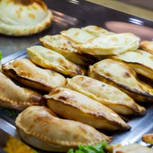

Empanadas

Description
An empanada is a thin bread dough, filled with a salty or sweet preparation and baked or fried. The filling may include red or white meat, fish, vegetables or fruits.
Ingredients
- 12 empanada lids
- 1/2 kg. minced meat
- 2 onions
- 2 cloves of garlic
- 1/2 red bell bell pepper
- 1 tomato
- 2 tablespoons of tomato puree
- 1 handful of olives
- Paprika
- Salt
- Pepper
- Cumin
Steps
- In a pot with hot oil add the onion and bell bell pepper. Let them brown for a few minutes and when they are half cooked (transparent onion), add the garlic and a little salt and pepper.
- Turn up the heat and add all the minced meat at once. Move the meat so that it does not stick together. When the meat is sealed add the diced tomato and the 2 tablespoons of tomato puree. Season with paprika and cumin, a little more salt and pepper and mix well. Cover (not completely, leave a small hole) and let it cook for half an hour, stirring a little at a time.
- Remove from the heat and let cool in the pot. Add the chopped olives and mix well (in this step you can add anything else you want to add: hard-boiled egg, raisins, potatoes, etc.).
- Distribute the filling in the empanada lids, and close with a traditional "repulgue". Before putting them in the oven, you can brush them with egg, but this is optional.
- Place our meat empanadas on a baking sheet and bake in a high oven until golden brown and enjoy!